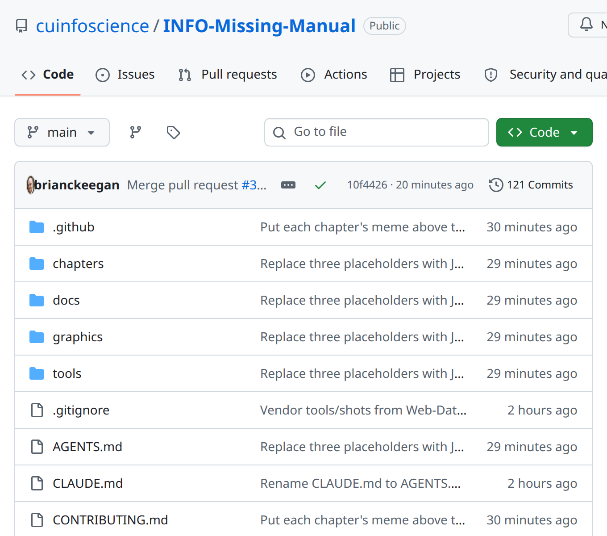
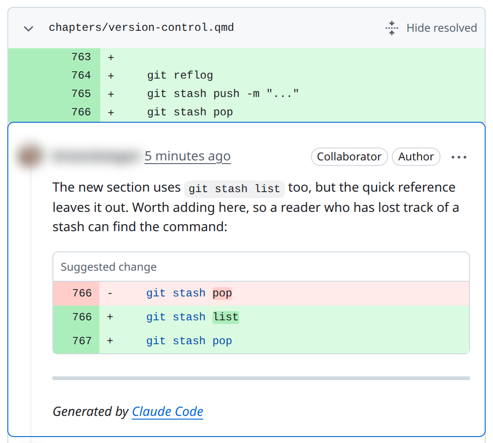

31 Version Control
Prerequisites (read first if unfamiliar): Chapter 11.
See also: Chapter 32, Chapter 33, Chapter 30, Chapter 26, Chapter 27, Chapter 29.
Purpose
You know this folder. It has analysis.ipynb, analysis_v2.ipynb, analysis_final.ipynb, and analysis_final_REAL.ipynb, and the night before the deadline you can’t say which one made the figure in your report. Or a teammate emailed you “the latest version,” and pasting it in quietly erased an hour of your changes. None of this means you’re disorganized. It means you’ve been doing version control by hand, with file names and email, and that stops working at about the third version.
Git does the same job properly. It records a history of your project that you can rewind, compare, and share without anyone overwriting anyone else. GitHub hosts that history online and adds the tools teams use to discuss changes: pull requests, reviews, and issues. Git’s reputation for being confusing is partly earned (terse messages, odd vocabulary, commands that seem to eat your work), but you need only a small part of it to get nearly all the benefit, and almost nothing you do in it is truly irreversible.
This chapter covers that part: how Git thinks, the daily loop, branches and merges, pull requests and forks, conflicts, and the “second week” tools for getting lost work back and tidying a branch before review. Team process (reviews, issues, working agreements) is in Chapter 32, automated checks on every push in Chapter 33, and leaked passwords in Chapter 34.
Why read this chapter
- You have
analysis_final.ipynbandanalysis_final_REAL.ipynb, and you’re no longer sure which one made the figure in your paper. - You typed
git push, Git answered! [rejected]andfailed to push some refs, and you’re afraid any fix you try will make it worse. - Git asked for your password, you typed your GitHub password, and it still wouldn’t let you push.
- A
git pullstopped withCONFLICT (content): Merge conflict in README.md, and now your file is full of<<<<<<<lines. - You ran
git reset --hard, two commits vanished from the log, and you’d like to know they aren’t really gone. - Your instructor wants a pull request from a fork, and you’re not sure how that differs from uploading files.
- You committed a 400 MB CSV or a file with an API key in it, and you want to know why that’s a problem and how to avoid it next time.
Running theme: make changes small, reviewable, and reversible
Small commits with clear messages, small pull requests, and frequent syncing make every mistake cheap to spot and cheap to undo.
31.1 How Git thinks about your project
Most Git confusion comes from not having a picture of what Git is doing, so start with the picture.
A repository is your project folder plus a hidden .git folder inside it. Everything Git knows (every saved version, branch, author, and date) lives in .git. Delete it and you have an ordinary folder again.
A commit is a snapshot of every tracked file at one moment, plus a little metadata: who made it, when, a message saying why, and an ID. The ID is a hash computed from the snapshot and its history, usually shown by its first seven characters. git log lists commits, newest first:
$ git log --oneline -3
83ac980 Explain why test responses are dropped
de5b3ad Drop test responses from staff accounts
24c42fc Add run instructions to READMEBetween editing a file and committing it, a change passes through three places, and this is what trips people up first. The working tree is the files on your disk. The staging area (also called the index) holds the changes you’ve told Git to put in the next commit. The history is the commits themselves. git add copies a change from the working tree into staging; git commit turns everything staged into a commit (Pro Git’s chapter on recording changes has pictures).
edit file → working tree
git add file → staging area
git commit → historyThe middle step lets you choose: if you fixed a bug and also renamed a variable, you can commit the two separately. It also explains a puzzle almost everyone hits. After git add, plain git diff shows nothing, because it compares the working tree with staging; git diff --staged shows what’s about to be committed.
A branch is just a name that points at one commit and moves forward each time you commit on it (Branches in a Nutshell). That’s why branches are nearly free, and why the habit is a new branch for every change. Because branches split off and join back together, history isn’t a line but a graph, which git log --oneline --graph draws. Picture a graph of commits with name tags on some of them, and most Git commands start to make sense.
A remote is another copy of the repository somewhere else, usually on GitHub. The one you cloned from is called origin; if you forked a project, you’ll add a second, upstream, for the original. git push, git pull, and git fetch move commits between your copy and a remote (Working with Remotes).
And a pull request (PR, or merge request on GitLab) is a GitHub proposal to merge one branch into another. It isn’t part of Git: it’s a web page where teammates read the changes, comment, and eventually click Merge (About pull requests), which makes a change visible before it lands.
31.2 Why bother, and what belongs in Git
The first payoff shows up even when you work alone: you can undo almost anything. Delete a file by accident, or rewrite a function and realize two hours later that the old one was right, and Git gives the old version back (git restore --source=<commit> file pulls one file from any past commit). That alone is worth the learning curve.
The second is an answer to what changed, and when? When a line of code puzzles you a month from now, git log and git blame say which commit introduced it and why. On a team, everyone’s edits live in one tracked history instead of whichever copy was emailed around last.
The third matters most for coursework and research: the history is a record of your decisions. Messages like “Switch from mean to median imputation (see #42)” or “Fix off-by-one in the date parser” let you reconstruct what you did when you write up results or answer a reviewer.
That record only helps if the right things are in it. Version what’s small, text, and written by people: code, notebooks (with the care in “Notebooks in Git” below), Markdown, configuration such as requirements.txt and .gitignore, and small reference data your scripts read. Those files are the project.
Keep four kinds of thing out. Secrets (API keys, passwords, .env files) must never be committed: once pushed, they stay in the history even after you delete the file, and anyone with a copy can find them (Chapter 34 says what to do if it happens). Large data belongs in cloud storage, fetched by a script. Generated files (caches, __pycache__/, rendered HTML) can be rebuilt from your code. And environment folders such as .venv/ are huge and tied to one computer; commit the recipe (requirements.txt or environment.yml) instead. “Data science projects” below explains each and has a starter .gitignore.
31.3 Getting started: install, set up, create or clone
Install Git and tell it who you are
Run git --version in a terminal to see whether you have Git. On a Mac, if it’s missing, that command offers to install Apple’s Command Line Tools, which include it. On Windows, install Git for Windows, which also gives you Git Bash (see Chapter 11). On Linux, use your distribution’s package manager. Pro Git’s Installing Git covers all three.
Git stamps your name and email on every commit, so tell it both before your first commit on a new computer. Skip this, and the commit stops with a message that looks alarming but isn’t:
Author identity unknown
*** Please tell me who you are.
Run
git config --global user.email "you@example.com"
git config --global user.name "Your Name"
to set your account's default identity.
Omit --global to set the identity only in this repository.
fatal: unable to auto-detect email address (got 'you@laptop.(none)')Four settings, run once per computer, cover it:
git config --global user.name "Your Name"
git config --global user.email "you@example.edu"
git config --global init.defaultBranch main
git config --global pull.rebase falseUse the email on your GitHub account, so GitHub links your commits to you (it can keep that address private). The third line names every new repository’s first branch main, as GitHub does; without it, each git init prints a ten-line hint about the name master. The fourth tells git pull to combine your work with a teammate’s by merging, this chapter’s default; without it, recent Git stops the first time both sides have new commits and asks you to choose (“Remotes” below shows the message). The settings live in .gitconfig in your home folder (first-time setup in Pro Git).
Start a new repository
For a new project, make a folder and run git init inside it to create the hidden .git folder. Make your first commit two files: a README.md that says what the project is, and a .gitignore that lists what Git should never track.
mkdir housing-audit && cd housing-audit
git init
# ... create README.md and .gitignore ...
git add README.md .gitignore
git commit -m "Initialize repository"Why those two first? The README puts the project’s purpose in writing on day one, and the .gitignore is in place before you can accidentally commit a .venv/ folder or a 2 GB dataset. “I’ll add the README later” is rarely kept.
Clone an existing one
When a course, lab, or open-source project gives you starter code, you don’t init; you clone:
git clone https://github.com/course-org/ds101-starter.git
cd ds101-starterA clone is a full copy of the repository, every commit included, not just the latest files. That’s what makes Git a distributed version control system: your copy is complete on its own, so you can work offline, browse old commits, and branch without asking a server. The trade-off is that a long history, or big files committed to it, makes a repository slow to clone.
When GitHub asks for a password
The first time you push to GitHub over HTTPS, Git asks for a username and password, and nearly everyone falls into the same trap: your GitHub password doesn’t work, because GitHub removed password sign-in for Git. Let a tool handle it instead. GitHub recommends the GitHub CLI (gh auth login, which signs you in through your browser) or Git Credential Manager (included with Git for Windows); both remember the credential afterward (caching your GitHub credentials). Or create a personal access token on GitHub and paste it where Git asks for your password.
31.4 The daily loop
Day to day, Git is the same handful of commands: see what changed, stage what you mean to keep, commit it with a clear message, and sync. Once that loop is automatic, the rest of Git is much less intimidating. The first worked example below shows one full turn with real output.
Start by looking. git status lists the files you’ve changed since the last commit, with hints about what to do next; it’s never wrong to run it. git diff shows the changed lines (a diff, + for added and - for removed). Read both before every commit: skipping the diff is how a debugging print or a hard-coded password slips into history.
Then stage on purpose. The right size for a commit is one idea: a bug fix, a new check, a renamed function. git add <file> stages a whole file, and git add -p walks through each changed chunk and asks whether to stage it, the easiest way to split a messy afternoon into clean commits. Typing git add . every time is tempting, but then you stop noticing what you commit.
Commit with a message that says why. The convention is a short summary line, around 50 characters, in the imperative mood: “Add data intake checks,” not “Added data intake checks” and certainly not “changes.” A good test: it should complete “If applied, this commit will…”. When the change needs explaining, add a blank line and a paragraph on what and why. Chris Beams’s How to Write a Git Commit Message is the classic guide.
git commit -m "Add data intake checks for missing customer_id"Without -m, git commit opens an editor for the message (so does a git pull that makes a merge commit), and it’s often Vim, which is disorienting the first time; Chapter 12 shows how to get out.
Finally, sync. git push sends your commits to GitHub, where they’re backed up and visible to teammates. git pull brings in theirs; run it before you start new work.
git push # send your commits to origin
git pull # fetch the remote's commits and merge them into your branchStatus, diff, add, commit, push, pull: those six are most of what you’ll type.
31.5 Branches and merges
Why branches
Branches solve a simple problem: you want to try something without breaking the version everyone depends on. So main is kept working, always, and each feature, fix, or experiment happens on its own short-lived branch, reaching main only after review. Anyone who clones the project gets code that runs, not your half-finished function.
Branches also keep people out of each other’s way. Two teammates can work on two features at once, and Git merges them when both are ready; if they changed the same lines, Git stops and asks rather than silently picking a winner. And experiments are free: make a branch called try-new-parser, make a mess, and if it doesn’t work out, delete the branch.
The branch workflow
Almost every change, from a typo fix to a week-long feature, goes the same way. Update main first. Make a branch whose name says what’s in it, such as fix-date-parser or issue-42-cleanup-nulls. Commit on it, one idea at a time. Push it and open a pull request as soon as there’s something to discuss (a draft PR says “not ready, but look”). Merge after review, once someone else has read the diff and the tests pass.
git switch main
git pull
git switch -c fix-date-parser
# ... edit files, run tests ...
git add src/parsers.py tests/test_parsers.py
git commit -m "Fix date parser off-by-one for February"
git push -u origin fix-date-parser
# Then open a pull request on GitHub.git switch -c creates a branch and moves onto it. The -u on the first push links your branch to the one on GitHub, so later a plain git push or git pull works. Pro Git’s Basic Branching and Merging walks through the same cycle.
Merge or rebase?
Sooner or later someone tells you to “rebase,” so it helps to know the choice. A merge joins two lines of work with a new merge commit, leaving both histories as they happened. A rebase replays your branch’s commits on top of the latest main, as if you’d started today, for a straight-line history. The catch is that replayed commits are new commits, with new hashes.
For student work, merge by default. Merges never rewrite commits someone else may have, and the branchy history they leave is an honest record, not clutter. Rebase is a good tool with one sharp edge: rebasing a branch others have pulled leaves their copies full of commits that no longer exist in yours (the perils of rebasing, in Pro Git’s words). If a project asks for rebase, follow its policy; “The second week” below shows how.
Undo safely
Which “undo” you need depends on which of the three zones the change is in. An edit you haven’t staged: git restore <file> throws it away and brings back the last committed version; be sure, because Git never saved those edits and can’t get them back. A change you staged by mistake: git restore --staged <file> unstages it and keeps your edits. A commit you want to redo: git reset --soft HEAD~1 removes the last commit but keeps its changes staged. Pro Git’s Undoing Things has more cases.
git restore src/broken.py # throw away unstaged edits
git restore --staged src/broken.py # unstage without losing edits
git reset --soft HEAD~1 # undo the last commit, keep its changesThe rule that matters most: once a commit is pushed to a branch others use, fix it with a new commit, not by rewriting history. git reset --hard, git rebase, and git push --force on a shared branch can delete work your teammates already have. git revert <commit> makes a new commit that undoes an old one, and you push it like any other; the mistake stays visible in the history, which is fine.
Never run git push --force on main or on any branch your teammates share. If you need to rewrite history on your own feature branch, use git push --force-with-lease, which refuses to overwrite the remote if someone else has pushed there since you last fetched. On a shared branch, force-pushing is how you erase a collaborator’s work.
31.6 Remotes: fetch, pull, and push
What each one does
The difference between fetch and pull confuses nearly everyone. git fetch downloads new commits from the remote but doesn’t touch your files or your branch: fetch, look at what came in, then decide. After a fetch, git log main..origin/main lists the commits the remote has that your main doesn’t (origin/main is Git’s memory of where main was on GitHub when you last checked).
git pull is a fetch followed by a merge into your current branch. It’s the one you’ll use most, and if the incoming commits changed the same lines you did, it stops with a merge conflict like any other merge. git push goes the other way, uploading your branch’s new commits.
git fetch origin # see what's on the remote without merging
git pull # fetch + merge into the current branch
git push # upload the current branch's commits to origingit push is rejected
A rejected push looks frightening but almost always means something ordinary: the remote has commits you don’t have yet, usually because a teammate pushed first.
$ git push
To ...
! [rejected] main -> main (fetch first)
error: failed to push some refs to '...'
hint: Updates were rejected because the remote contains work that you do not
hint: have locally. This is usually caused by another repository pushing to
hint: the same ref. If you want to integrate the remote changes, use
hint: 'git pull' before pushing again.
hint: See the 'Note about fast-forwards' in 'git push --help' for details.((non-fast-forward) instead means you’ve fetched their commits but not combined them with yours; same fix.) Do what the hint says and run git pull. If you never set pull.rebase (see “Install Git and tell it who you are”), Git won’t guess how to combine the two and stops:
hint: You have divergent branches and need to specify how to reconcile them.
...
fatal: Need to specify how to reconcile divergent branches.Nothing has happened yet. Run git pull --no-rebase to merge, or git pull --rebase to replay your new commits on top of theirs (safe, since nobody else has them yet). If you both edited the same lines, resolve the conflict with the playbook below, git add the fixed files, and run git commit after a merge or git rebase --continue after a rebase. Then git push will work.
On a branch nobody else should be pushing to, check that you’re on the branch you think (git branch marks it with *) and pushing to the remote you think (git remote -v). Don’t “fix” a rejection with git push --force unless you know exactly which commits you’d overwrite. If you’re stuck, Chapter 2 shows how to ask for help.
Drift: why small, frequent syncs win
On a team, people push to main every day. Branch off on Monday and ignore main until Friday, and you’re four days behind: someone renamed the function you call, someone reorganized the file you’re editing, and your merge conflict has been growing all week. That’s drift.
The habit that prevents it is dull and works: pull before you start anything new, and push small, finished pieces often. Pull main before every new branch, bring main into any branch that lives more than a day or two, and push commits as soon as they stand on their own. Frequent small syncs mean small conflicts; the once-a-week catch-up is where the scary ones live.
31.7 GitHub fundamentals
Finding your way around a repository
A repository’s page on GitHub has a row of tabs, each for a different kind of work (Figure 31.1). Code is the file browser for the default branch, with the README rendered below the file list. Issues is the project’s to-do list and discussion board. Pull requests is where proposed changes are reviewed and merged. Actions runs automated checks on every push (Chapter 33 covers it). And Releases, on the right-hand side of the Code tab, holds named versions people can download and cite.

main, each beside the last commit that changed it. The README is rendered below the list, out of view.
The most important file in any repository is the README, because it’s the front door: a classmate, a grader, an employer, or you in six months will read it first to learn what the project is and how to run it. Write it first and keep it current (Chapter 30 says what a good one contains).
Pull requests
A pull request says: “I’d like the commits on this branch to become part of that one.” It puts the commits, the diff they produce, and a discussion thread on one page, which is what makes it the natural place for review.
Two habits make PRs work. Open a draft PR early when you want feedback on the approach; it says “don’t merge yet, but please comment.” And keep each PR to one idea. A PR touching thirty files for three unrelated reasons can’t really be reviewed, so reviewers skim and approve or put it off. One that touches five files for one reason gets read carefully and merged quickly.
How a pull request merges
GitHub offers three ways to merge a PR, and each leaves different history on main. Create a merge commit keeps every commit from the branch and adds a merge commit, the most faithful record. Squash and merge combines the PR’s commits into one new commit on main: tidy, but the individual steps are gone. Rebase and merge replays each commit onto main, keeping the commits but not the merge commit.
None is best; what matters is picking one per repository (its owner can limit the choices in its settings) and sticking with it. Squash and merge is a sensible default for student projects, since a branch full of “wip” and “fix typo” commits becomes one clean commit. One side effect catches people out: after a squash merge, git branch -d refuses to delete your local branch with error: the branch '…' is not fully merged, because its original commits never reached main. Once GitHub shows the PR as merged, git branch -D deletes it.
Reviews and comments
A good code review comment points at a specific line, explains why, and suggests a direction. “This is wrong” helps no one. “This assumes the column is never null, but about 3% of rows in the source data are null, so this line will crash on real input; consider a dropna or fillna first” can be acted on. On GitHub you comment on a line by clicking beside it in the PR’s diff, and a suggestion goes one step further: it carries the exact replacement text, which the author can apply with one click (Figure 31.2; GitHub’s guide to commenting on a pull request shows how).

It also helps to label each comment’s kind, so the author knows what must change and what’s taste: Blocker (must fix before merging: correctness or security), Suggestion (a better way, not required), Question (please explain the intent), and Nit (a small style point, explicitly optional). As the author, reply to every thread, “Changed in abc123” or “Kept as is, because…”, so the reviewer sees each point closed. Chapter 32 has much more on reviewing.
Linking pull requests and issues
GitHub links an issue automatically when you mention its number (#42) in a PR description, a commit message, or a comment. Every PR should name the issue it addresses, so the repository becomes a searchable record of why each change was made.
## Summary
Fix the off-by-one in the date parser so February rolls over correctly.
Closes #42.Closes #42, Fixes #42, or Resolves #42 in a PR description goes further: it closes issue #42 automatically when the PR merges into the default branch, which keeps the issue list honest without any bookkeeping.
31.8 Forking workflow
Fork or clone?
The two words sound alike, and mixing them up is one of the most common beginner questions. Cloning copies a repository from GitHub to your computer. Forking copies someone else’s repository to your own GitHub account. You fork when you can’t push to the original, the usual case for open-source projects and course repositories you didn’t create. (The word comes from a fork in the older sense, a project splitting in two; most GitHub forks exist only to send changes back.)
So you do both: fork to get github.com/your-name/project, then clone your fork. Your fork is the remote you can push to (origin); the original is a read-only second remote (upstream) you pull updates from.
Contributing through a fork
Fork the repository with GitHub’s Fork button. Clone your fork, not the original, and add the original as upstream. Make a branch for your change, keeping your fork’s main a match for the original’s. Push the branch to your fork, and open a pull request from it to the original’s main.
# After forking on GitHub:
git clone https://github.com/your-name/project.git
cd project
git remote add upstream https://github.com/original-owner/project.git
git remote -v # shows origin (your fork) and upstream (the original)
git switch -c fix-typo-in-readme
# ... make changes, commit ...
git push -u origin fix-typo-in-readme
# Then open a pull request on GitHub, targeting original-owner/project's main.The subtle part is the direction: the PR goes from your fork’s branch into the original’s main. GitHub usually fills in both sides; check that the base is the original repository and the source is your branch.
Keeping a fork up to date
Forks go stale. The original keeps getting commits while you work, and if your fork’s main falls too far behind, your PR will conflict with recent changes.
So bring upstream’s main into your local main now and then, especially before a new branch, and push it to your fork:
git switch main
git fetch upstream
git merge upstream/main
git push origin mainGitHub’s Sync fork button, above your fork’s file list, does the same from the web (Syncing a fork). Then bring the updated main into any branch you’re still working on: a small conflict today beats a month of drift.
31.9 The second week: recover, set aside, copy, and replay
Once the daily loop is second nature, new problems show up. You reset a branch and lose two commits you wanted. You need to switch branches mid-edit. A fix on one branch is needed on another today. A project asks you to rebase your pull request. Four commands handle those moments: git reflog, git stash, git cherry-pick, and git rebase.
The transcripts come from a small practice repository, thesis-analysis, with a main branch and a plots branch. Your hashes will differ.
The rule underneath all four
cherry-pick and rebase make new commits that copy old ones, with new hashes. That’s harmless on a branch only you have, and damaging on one someone else has pulled, because their copy still has the old commits. So the rule from “Undo safely” covers everything here: rewrite only history that nobody else has. A branch you pushed for a pull request that nobody else has checked out is still yours; main never is.
git reflog: the undo for your undos
This command turns most Git “disasters” into a two-minute fix. Git keeps a private diary of everywhere your branch has pointed (each commit, reset, switch, merge, and rebase), the reflog. Suppose you meant to undo one commit and typed HEAD~2:
$ git log --oneline
b75f6dc Write cleaned data to CSV
6f23bac Drop rows with missing age
122cf4c Add cleaning script
5970f03 Add README
$ git reset --hard HEAD~2
HEAD is now at 122cf4c Add cleaning scriptThe two newest commits are gone from git log, and your stomach drops. But they’re still in the reflog:
$ git reflog
122cf4c HEAD@{0}: reset: moving to HEAD~2
b75f6dc HEAD@{1}: commit: Write cleaned data to CSV
6f23bac HEAD@{2}: commit: Drop rows with missing age
122cf4c HEAD@{3}: commit: Add cleaning script
5970f03 HEAD@{4}: commit (initial): Add README
$ git reset --hard b75f6dc
HEAD is now at b75f6dc Write cleaned data to CSVRead the reflog from the top: the newest entry is the mistake, and the line below it is where you were just before. Resetting to that hash puts both commits back. If you’d rather look before you leap, git switch -c rescue b75f6dc makes a new branch at the lost commit and leaves your current branch alone.
The reflog has limits. It records only commits, so edits you never committed aren’t in it (one more reason to commit often). It lives only on your computer; a fresh clone starts with an empty one. And Git cleans it up: by default, a commit nothing else points to stays recoverable for about a month.
git stash: set work aside without committing
You’ll meet this message in your first week of branches. Git won’t switch if that would overwrite changes you haven’t committed:
$ git switch main
error: Your local changes to the following files would be overwritten by checkout:
plots.py
Please commit your changes or stash them before you switch branches.
AbortingWhen the work isn’t ready to commit, stash it: Git saves your uncommitted changes, cleans the working tree, and gives the changes back when you ask (Stashing and Cleaning in Pro Git).
$ git stash push -m "half-done axis labels"
Saved working directory and index state On plots: half-done axis labels
$ git stash list
stash@{0}: On plots: half-done axis labels
$ git switch main
Switched to branch 'main'Do what you needed on main, come back with git switch plots, and run git stash pop to get the changes back. Always add a message with -m: five entries all named “WIP on plots” are no help a week later. And treat the stash as a coat check, not a closet; anything you’ll keep for more than a day belongs in a commit.
git cherry-pick: copy one commit to another branch
Sometimes one commit is needed elsewhere right away. On plots, you fix a real bug in clean.py (negative ages were getting through), and main needs the fix now, before plots is ready. git cherry-pick copies a single commit onto the branch you’re on:
$ git log --oneline -1
3543085 Drop negative ages
$ git switch main
Switched to branch 'main'
$ git cherry-pick 3543085
[main da9a91d] Drop negative ages
Date: Fri Sep 25 00:37:56 2026 +0000
1 file changed, 1 insertion(+)The copy on main has a new hash (da9a91d), because a commit’s hash covers its parent too. If the copied change conflicts with main, resolve it with the merge-conflict playbook below and run git cherry-pick --continue, or back out with git cherry-pick --abort. Cherry-pick is for the occasional commit; if you’re copying a series of them, the branches probably want to be merged.
git rebase: replay your branch on top of main
While you worked on plots, main moved on. git log --graph shows the two lines of work:
$ git log --oneline --graph --all
* 41a3245 Document run order
* da9a91d Drop negative ages
| * 3543085 Drop negative ages
| * 49de67a Label axes
| * e441bb4 Start plotting script
|/
* b75f6dc Write cleaned data to CSV
...This chapter’s default is to merge main into your branch (“Merge or rebase?” above). When a project asks you to rebase instead, Git sets your branch’s commits aside, moves the branch to the tip of main, and replays the commits there one at a time:
$ git switch plots
Switched to branch 'plots'
$ git rebase main
warning: skipped previously applied commit 3543085
hint: use --reapply-cherry-picks to include skipped commits
hint: Disable this message with "git config advice.skippedCherryPicks false"
Successfully rebased and updated refs/heads/plots.
$ git log --oneline -4
15c9c7b Label axes
2ad1d07 Start plotting script
41a3245 Document run order
da9a91d Drop negative agesYour work now sits on top of the latest main, in one straight line, and Git skipped “Drop negative ages” because it was already on main (the cherry-pick). Every replayed commit has a new hash, which is why rebasing a branch someone else has pulled causes trouble, and why pushing a rebased branch you’d already pushed needs git push --force-with-lease, the careful force-push from the warning above.
If a replayed commit conflicts, the rebase stops at that commit:
$ git rebase main
Auto-merging README.md
CONFLICT (content): Merge conflict in README.md
error: could not apply 866f67a... Note plots order
hint: Resolve all conflicts manually, mark them as resolved with
hint: "git add/rm <conflicted_files>", then run "git rebase --continue".
hint: You can instead skip this commit: run "git rebase --skip".
hint: To abort and get back to the state before "git rebase", run "git rebase --abort".
Could not apply 866f67a... Note plots orderFix the file as in the merge-conflict playbook below, git add it, and run git rebase --continue; a rebase can stop once for each commit that conflicts. If it gets confusing, git rebase --abort puts everything back as it was. And if you’ve finished and don’t like the result, git reset --hard ORIG_HEAD undoes the whole rebase, because Git saves where your branch was in ORIG_HEAD before a rebase starts (the reflog has it too).
Tidy a branch before review: git rebase -i
A branch often ends up with commits like “Add title,” “fix typo,” and “wip.” Before you open a pull request, an interactive rebase lets you combine, reword, reorder, or drop commits that haven’t been shared yet. git rebase -i main opens your editor with one line per commit on the branch, oldest first:
pick d055f5b Start plotting script
pick fb5670f Label axes
pick 181ef6f Add title
pick 0b5c740 fix typo
pick 8831ba3 wipBelow those lines, the file lists every command it accepts. Change pick to fixup (or f) on the last two lines to fold them into “Add title,” keeping only its message; squash does the same but lets you edit the combined message, reword changes one message, and drop deletes a commit. Save and close the editor, and Git replays the branch:
$ git log --oneline -3
afe7f31 Add title
fb5670f Label axes
d055f5b Start plotting scriptEverything about rebasing applies here too: new hashes, --force-with-lease if the branch was already pushed, and ORIG_HEAD or the reflog to get the old version back. Many projects squash a PR’s commits when they merge it anyway (“How a pull request merges” above), so tidying is a courtesy to reviewers, not a requirement. Pro Git’s chapter on rewriting history covers the rest of what interactive rebase can do.
31.10 Merge conflicts: a calm playbook
What a conflict is
Your first merge conflict usually arrives the night before something is due, and a file suddenly full of <<<<<<< and >>>>>>> looks like damage. It isn’t. A merge conflict just means two branches changed the same lines in different ways, and Git, rather than guess, has stopped to ask you. Conflicts are a normal part of working with anyone, including yourself on two branches. The right reaction is “okay, time to resolve this,” not panic.
The playbook
First, read what Git said. It names every file that conflicted; don’t scroll past it.
Auto-merging src/cleaning.py
CONFLICT (content): Merge conflict in src/cleaning.py
Automatic merge failed; fix conflicts and then commit the result.Second, run git status for the full list, under “Unmerged paths.” It also shows the way out: git merge --abort puts everything back as it was before the merge.
$ git status
On branch main
You have unmerged paths.
(fix conflicts and run "git commit")
(use "git merge --abort" to abort the merge)
Unmerged paths:
(use "git add <file>..." to mark resolution)
both modified: src/cleaning.py
no changes added to commit (use "git add" and/or "git commit -a")Third, open each file and find the markers. Git has written both versions of every contested region into the file:
<<<<<<< HEAD
df = df.dropna(subset=["customer_id"])
=======
df = df.dropna(subset=["customer_id", "date"])
>>>>>>> feature-strict-cleaningBetween <<<<<<< HEAD and ======= is the version on your current branch; between ======= and >>>>>>> feature-strict-cleaning is the version coming in. Fourth, write the combined version you actually want. That rarely means picking one side wholesale: work out what each was trying to do, and keep both intentions:
df = df.dropna(subset=["customer_id", "date"])Then delete all three marker lines; Git won’t, and a leftover marker is a syntax error waiting to happen. Editors such as VS Code highlight conflicts and offer “accept current,” “accept incoming,” and “accept both” buttons, which are handy as long as you still read the result.
Fifth, stage each resolved file with git add, which tells Git it’s done. Sixth, finish the merge with git commit (or git merge --continue), accepting the suggested message. Last, and most important, test it: run the code, the tests, the notebook. A merge Git accepts can still be broken code, and that’s how conflicts most often sneak bugs in.
Ask for help when you can’t explain what each side was trying to do, or when the conflict is in a data file or a notebook. Notebook conflicts are raw JSON and hard to read; a notebook-aware tool such as nbdime helps. There’s no shame in git merge --abort and a talk with whoever wrote the other side.
31.11 Data science projects: ignore files, notebooks, and big data
.gitignore hygiene
Data projects pile up files that shouldn’t be in Git (environments, caches, outputs, secrets). .gitignore, at the top of the repository, lists patterns Git won’t track. Commit it early and add to it as the project grows. A reasonable starter for a Python data project:
# Python bytecode and caches
__pycache__/
*.py[cod]
.pytest_cache/
.ipynb_checkpoints/
# Environments
.venv/
venv/
env/
.conda/
# Secrets and local config
.env
.env.local
credentials.json
# Data (commit small reference data only; large files live elsewhere)
data/raw/
data/interim/
data/processed/
*.csv
!data/examples/*.csv
# Editor and OS junk
.DS_Store
.idea/
.vscode/*
!.vscode/settings.jsonA leading ! means “don’t ignore this after all,” an exception to a broader rule. Here every *.csv is ignored except those in data/examples/, so a tiny sample can be committed for tests; the .vscode/* and !.vscode/settings.json pair does the same for a shared editor setting. One surprise to know about: .gitignore only affects files Git isn’t already tracking. If you committed .env before adding it here, Git keeps tracking it until you run git rm --cached .env, and the old copy is still in the history.
Notebooks in Git
Jupyter notebooks are JSON files holding your code, your Markdown, and every output (plots included, as long strings of encoded image data). Git can track them, but their diffs are noisy and full of changes nobody made on purpose, since rerunning a cell changes its output and execution count (Chapter 16 has more).
Three habits keep notebooks manageable. Clear outputs before you commit, by hand (Clear Outputs of All Cells) or automatically with nbstripout, which can run as a pre-commit hook (Chapter 33 covers those); then a diff shows only the code and prose you changed. Keep cells in order: a notebook whose cells ran [3], [1], [5] is confusing to review and unreliable to rerun. And keep heavy code in .py files that the notebook imports, so the code that matters lives where Git can review it cleanly.
Large files and datasets
Git was built for small text files, and it handles big ones badly. Every committed version stays in the history, so a 500 MB CSV committed once makes every clone slow forever, even after you delete it. GitHub also blocks files larger than 100 MiB: the push is rejected, and deleting the file in a later commit doesn’t help, because it’s still in an earlier one.
The fix is to keep raw data outside the repository (a cloud bucket, a shared drive, a course URL, a data archive) and commit the script that downloads it into data/raw/. The recipe is versioned, the data isn’t, and a new collaborator runs python scripts/download_data.py (or make data) to get a copy. If you truly need big files in a repository, Git LFS (Large File Storage) keeps them alongside Git rather than inside it, but that’s more machinery than most student projects need.
31.12 Stakes and politics
Almost everyone who learns Git has a story about “ruining” a repository: a force-push that erased a teammate’s afternoon, a rebase that seemed to swallow a week of commits. Git is worth that trouble, but the trouble doesn’t fall evenly. Git’s model, a branching graph of hashed snapshots, rewards one particular way of thinking, and it asks far more of a newcomer than the revision history in Google Docs or track changes in Word. Fluency in Git is a real skill, and it also works as a credential that sorts people who had someone to show them from people who didn’t.
The platform matters as much as the tool. Git is open and decentralized; GitHub is one company’s service, which Microsoft bought in 2018. Microsoft also makes VS Code and GitHub Copilot and is a major investor in OpenAI, so a student’s editor, code host, and AI assistant can all belong to one firm. “If it’s not on GitHub, it doesn’t exist” is true in many job markets and false in important ones, and moving so much open-source work onto a single corporate host concentrates a kind of infrastructural power that’s uncomfortable to depend on. GitLab, Codeberg, and self-hosted Gitea exist so that Git the protocol doesn’t collapse into one company’s product.
And “if it’s not in Git, it didn’t happen” is a handy slogan that quietly leaves out work Git can’t represent: curating a dataset, the conversation that settled a design, mentoring a new teammate. As with project management, the visible work gets the credit.
See Chapter 8 for the broader framework. The concrete prompt to carry forward: when a tutorial says “host it on GitHub,” ask what changes if the platform does, and which work is still real even when Git can’t represent it.
31.13 Worked examples
The examples follow one small project, survey-analysis, a script and a README that clean a course survey. The transcripts are real; your hashes will differ, and where Git prints the remote’s address, it’s shortened to ....
The daily loop
You added run instructions to the README. Before you commit, look at what changed, then stage, commit, and push:
$ git status
On branch main
Your branch is up to date with 'origin/main'.
Changes not staged for commit:
(use "git add <file>..." to update what will be committed)
(use "git restore <file>..." to discard changes in working directory)
modified: README.md
no changes added to commit (use "git add" and/or "git commit -a")
$ git diff
diff --git a/README.md b/README.md
index d7c8cce..ce4321f 100644
--- a/README.md
+++ b/README.md
@@ -1,3 +1,7 @@
# Survey analysis
Cleans and summarizes the spring survey.
+
+## Run
+
+ python clean.py
$ git add README.md
$ git commit -m "Add run instructions to README"
[main 24c42fc] Add run instructions to README
1 file changed, 4 insertions(+)
$ git push
To ...
27194ea..24c42fc main -> maingit status says which files changed, and its indented hints say what you can do next. git diff shows the lines, with + for added and - for removed; the @@ -1,3 +1,7 @@ line means “lines 1 to 3 of the old file became lines 1 to 7 of the new one.” Reading the diff before every commit is the habit that catches the stray debugging line. The last line of git push says main on the remote moved from one commit to the next.
Branch and pull request
A change someone should review goes on its own branch. Here, two commits drop test responses that staff entered while checking the survey:
$ git switch -c drop-test-responses
Switched to a new branch 'drop-test-responses'
$ git commit -am "Drop test responses from staff accounts"
[drop-test-responses de5b3ad] Drop test responses from staff accounts
1 file changed, 1 insertion(+)
$ git commit -am "Explain why test responses are dropped"
[drop-test-responses 83ac980] Explain why test responses are dropped
1 file changed, 1 insertion(+)
$ git push -u origin drop-test-responses
To ...
* [new branch] drop-test-responses -> drop-test-responses
branch 'drop-test-responses' set up to track 'origin/drop-test-responses'.
$ git log --oneline --graph
* 83ac980 Explain why test responses are dropped
* de5b3ad Drop test responses from staff accounts
* 24c42fc Add run instructions to README
* 27194ea Start the project(git commit -am stages every tracked file you’ve changed and commits in one step. It’s a handy shortcut once you’ve read the diff, and it never picks up brand-new files.) Then open a pull request on GitHub, which offers a button for a branch you’ve just pushed, and describe what the change does and how to check it (Template B below). When a reviewer asks for a change, make it as a new commit on the same branch and git push again; the PR updates itself, and the review history stays readable. After it merges, update your own main and delete the branch: git switch main, git pull, git branch -d drop-test-responses (or -D after a squash merge, as “How a pull request merges” explains).
Resolve a merge conflict
While the branch waited for review, someone changed the same line of the README on main. Bringing main into the branch stops with a conflict:
$ git merge main
Auto-merging README.md
CONFLICT (content): Merge conflict in README.md
Automatic merge failed; fix conflicts and then commit the result.Git has written both versions into the file, between markers:
<<<<<<< HEAD
Cleans the spring survey and drops test responses.
=======
Cleans and summarizes the spring 2026 course survey.
>>>>>>> mainThe part above ======= is your branch (HEAD); the part below is main. Neither is simply right: one names the survey, the other mentions the new step. Write the line you want, delete all three marker lines, and finish the merge:
Cleans the spring 2026 course survey and drops test responses.$ git add README.md
$ git commit -m "Merge main into drop-test-responses"
[drop-test-responses 40a3ee8] Merge main into drop-test-responses
$ git log --oneline --graph -6
* 40a3ee8 Merge main into drop-test-responses
|\
| * 6776b0f Say which survey
* | ba12f45 Mention test responses in README
* | 83ac980 Explain why test responses are dropped
* | de5b3ad Drop test responses from staff accounts
|/
* 24c42fc Add run instructions to READMEThe graph shows the two lines of work and the merge commit that joins them. Then run the code, or at least open the file, before you push: a merge Git accepts can still leave a broken file if a marker line survived.
Contribute through a fork
To suggest a fix to a project you can’t push to, such as this book, fork it on GitHub, clone your fork, and add the original as a second remote called upstream:
$ git remote add upstream https://github.com/cuinfoscience/INFO-Missing-Manual.git
$ git remote -v
origin https://github.com/YOUR-USERNAME/INFO-Missing-Manual.git (fetch)
origin https://github.com/YOUR-USERNAME/INFO-Missing-Manual.git (push)
upstream https://github.com/cuinfoscience/INFO-Missing-Manual.git (fetch)
upstream https://github.com/cuinfoscience/INFO-Missing-Manual.git (push)origin is your copy, which you can push to; upstream is the project, which you only read from. Bring your main up to date (git fetch upstream, then git merge upstream/main), make a branch, commit, push the branch to origin, and open a pull request from your fork to the project. “Forking workflow” above has each command, and CONTRIBUTING.md in this book’s repository walks through the same steps for a first contribution.
Move a commit you made on the wrong branch
You meant to start a branch, but you committed on main. It happens to everyone, and as long as you haven’t pushed, it’s a quick fix: make a branch where you are, move main back to match the remote, and switch to the new branch. Check first which commits will move:
$ git status
On branch main
Your branch is ahead of 'origin/main' by 1 commit.
(use "git push" to publish your local commits)
nothing to commit, working tree clean
$ git log --oneline origin/main..main
5c6be3a Write the cleaned survey to data/processed
$ git branch save-output
$ git reset --hard origin/main
HEAD is now at 6776b0f Say which survey
$ git switch save-output
Switched to branch 'save-output'
$ git log --oneline -2
5c6be3a Write the cleaned survey to data/processed
6776b0f Say which surveyStart from a clean state (“nothing to commit, working tree clean”), because reset --hard also throws away uncommitted edits; commit or stash them first. The commit is safe on save-output before reset --hard moves main, and the reflog has it if anything goes wrong (“The second week” above). Read the “ahead by” count before you move anything: when this example was first run, main was ahead by 2, because an earlier commit had never been pushed, and both moved to the new branch. git log origin/main..main lists exactly the commits that will move.
31.14 Templates
Template A: Commit message
<Short summary in the imperative mood>
Why:
* ...
What changed:
* ...Template B: Pull request description
## Summary
## Why
## What changed
*
## How to test
*
## Screenshots/outputs (if relevant)
## Related issues
Closes #Template C: Review comment taxonomy
Blocker: correctness, security, reproducibility
Suggestion: improvement, alternative approach
Question: clarify intent, edge cases
Nit: formatting, naming (non-blocking)31.15 Exercises
Initialize a repository, add a README and
.gitignore, and make three meaningful commits. Readgit diffbefore each one.Create a branch, make changes, push it, and open a pull request.
Review a classmate’s pull request using the comment taxonomy; request one change, and approve after they revise.
Create a merge conflict on purpose (change the same line on two branches) and resolve it with the playbook.
Fork a repository, add an
upstreamremote, sync it, and open a pull request from your fork.In a practice repository, lose two commits with
git reset --hard HEAD~2and get them back withgit reflog. Then make three small commits on a branch, fold them into one withgit rebase -i, and undo the rebase withgit reset --hard ORIG_HEAD.
31.16 One-page checklist
I can explain the working tree, the staging area, and commits.
I read
git statusandgit diffbefore every commit.I make a branch for each change and keep
mainworking.I can fetch, pull, and push, and say what each does.
I can open, review, and merge pull requests.
I can use forks and keep them in sync with
upstream.I can resolve merge conflicts calmly, and I test after every merge.
I know
git reflogcan recover commits I thought I’d lost, and I rewrite history (rebase, cherry-pick, force-push) only on branches nobody else has pulled.I keep secrets, environments, and large data out of Git with
.gitignore, and I strip notebook outputs.
31.17 Quick reference: common commands
# create or clone
git init
git clone <url>
# inspect
git status
git diff
git diff --staged
git log --oneline --graph --decorate
# stage and commit
git add <file>
git add -p
git commit -m "..."
# branches
git branch
git switch -c <name>
git switch <name>
# remotes
git remote -v
git fetch
git pull
git push -u origin <branch>
# undo
git restore <file>
git restore --staged <file>
git revert <sha>
# merges and conflicts
git merge <branch>
git merge --abort
# second week
git reflog
git stash push -m "..."
git stash list
git stash pop
git cherry-pick <sha>
git rebase main
git rebase --continue
git rebase --abort
git rebase -i main
git push --force-with-lease- Scott Chacon and Ben Straub, Pro Git — the free, thorough book on Git; chapters 1–3 cover the daily loop and branching, 5–6 working with others and GitHub, and 7 advanced tools such as stashing and rewriting history.
- GitHub, About Git — a beginner-friendly overview of Git’s ideas, paired with how GitHub uses them.
- GitHub Education, Git cheat sheet (PDF) — a printable reference for everyday commands.
- Katie Sylor-Miller, Oh shit, git!?! — short, blunt recipes for the moments when Git seems to have eaten your work; bookmark it before you need it.
- Pro Git, Git Internals — the chapter that explains how Git stores everything; read it when you’re ready for Git to stop feeling like magic.
- GitLab and Codeberg — an open-core and a nonprofit alternative to GitHub, worth knowing about after the “Stakes and politics” point on platform concentration.
- Software Carpentry, Version Control with Git — a complete beginner workshop with exercises; a good hands-on follow-up to this chapter.